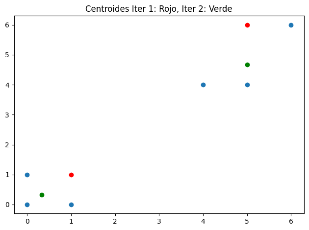

import matplotlib.pyplot as pltplt.scatter(df.x, df.y)plt.scatter(centroides.x, centroides.y, c="red")plt.scatter(centroides_2.x, centroides_2.y, c="green")plt.title("Centroides Iter 1: Rojo, Iter 2: Verde")plt.tight_layout()

## Distancia Centroides 1 a Puntospd.DataFrame(distance_matrix(centroides, df))
0
1
2
3
4
5
0
1.000000
1.414214
1.000000
4.242641
5.0
7.071068
1
7.071068
7.810250
7.211103
2.236068
2.0
1.000000
## Distancia Centroides 2 a Puntospd.DataFrame(distance_matrix(centroides_2, df))
0
1
2
3
4
5
0
0.745356
0.471405
0.745356
5.18545
5.934831
8.013877
1
6.200358
6.839428
6.146363
1.20185
0.666667
1.666667
DBSCAN
from sklearn.cluster import DBSCANdbs = DBSCAN(min_samples=2, eps=2)dbs.fit_predict(df)
array([ 0, 0, 0, 1, 1, -1])
from sklearn.cluster import DBSCANdbs = DBSCAN(min_samples=1, eps=1)dbs.fit_predict(df)